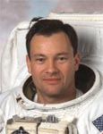

Lyndon B. Johnson Space Center
Houston, Texas 77058
|
National Aeronautics and Space Administration Lyndon B. Johnson Space Center Houston, Texas 77058 |
 |
Biographical Data |
||
Michael E. Lopez-Alegria (Captain, USN, RET.)
NASA Astronaut (Former)
PERSONAL DATA: Born May 30, 1958, in Madrid, Spain, and grew up in Mission Viejo, California. Lopez-Alegria enjoys sports, traveling and cooking and is interested in national and international political, economics and security affairs.
EDUCATION: Graduated from Mission Viejo High School, Mission Viejo, California, 1976; received a Bachelor of Science in systems engineering from the U.S. Naval Academy, 1980; Master of Science in aeronautical engineering from the U.S. Naval Postgraduate School, 1988. Graduate of Harvard University’s Kennedy School of Government Program for Senior Executives in national and international security. Speaks Spanish, French and Russian.
EXPERIENCE: Following flight training and designation as a Naval Aviator in 1981, Lopez-Alegria served as a flight instructor and then as a pilot and mission commander of EP-3E aircraft. In 1986, he was assigned to a 2-year cooperative program between the Naval Postgraduate School in Monterey, California, and the U.S. Naval Test Pilot School in Patuxent River, Maryland. His final tour before being assigned to NASA was at the Naval Air Test Center as an engineering test pilot and program manager. He has accumulated more than 5,700 pilot hours in over 30 different aircraft types.
NASA EXPERIENCE: Lopez-Alegria reported for training to the Johnson Space Center (JSC) in August 1992. Following a year of training and designation as an astronaut, he was first assigned to be the Astronaut Office technical point of contact to various space shuttle project elements. Lopez-Alegria was then assigned to Kennedy Space Center (KSC), where he provided crew representation on orbiter processing issues and support during launches and landings. Following his first spaceflight, he served as NASA Director of Operations at the Yuri Gagarin Cosmonaut Training Center in Star City, Russia. After his second mission, he led the International Space Station (ISS) Operations branch of the Astronaut Office. Following his third spaceflight, he was assigned as the technical liaison to JSC’s Extravehicular Activity (EVA) Office. A veteran of four space flights, Lopez-Alegria has logged more than 257 days in space and performed 10 spacewalks totaling 67 hours and 40 minutes of EVA. He retired from the Navy in June 2008, left NASA in March 2012, then joined the Commercial Spaceflight Federation as its president. In October 2014 Lopez-Alegria became an independent consultant; he is based in Washington, D.C.
SPACE FLIGHT EXPERIENCE: Mission Specialist (MS)-2, STS-73 Columbia (October 20 to November 5, 1995). The second United States Microgravity Laboratory mission focused on materials science, biotechnology, combustion science, the physics of fluids and numerous other scientific experiments housed in the pressurized Spacelab module. Lopez-Alegria served as the flight engineer during the ascent and entry phases of flight and was responsible for all operations of the “blue” shift on orbit.
MS-4, STS-92 Discovery (October 11 to October 24, 2000). After docking to the then unmanned ISS, the seven-member crew attached the Z1 Truss and Pressurized Mating Adapter 3, using Discovery’s robotic arm, and performed four spacewalks to configure these elements. Lopez-Alegria accumulated 14 hours and 3 minutes of EVA time in two of the spacewalks.
MS-1, STS-113 Endeavour (November 23 to December 7, 2002). The primary mission objective was delivery of the Expedition 6 crew to the ISS and the return of the Expedition 5 crew to Earth. Additionally, the four-member crew delivered, installed and activated the P1 Truss and its external thermal control system and transferred cargo from Endeavour to the ISS. Lopez-Alegria performed three spacewalks totaling 19 hours and 55 minutes.
Commander, ISS Expedition 14 (September 18, 2006 to April 21, 2007). After the launch of Soyuz TMA-9 from Baikonur Cosmodrome, Kazakhstan, and rendezvous, approach and docking with the ISS 2 days later, the three-member international crew conducted a 7-month mission to operate, maintain, build and utilize the station and its science facilities. Highlights included the arrival and departure of two unmanned Progress-M cargo vehicles, an 8-day joint mission with the STS-116 crew aboard the visiting space shuttle Discovery, five spacewalks dedicated to assembly and maintenance of the station and nearly 500 hours of science operations. The mission ended with TMA-9 undocking from the ISS and landing on the Kazakh steppe.
NOVEMBER 2014